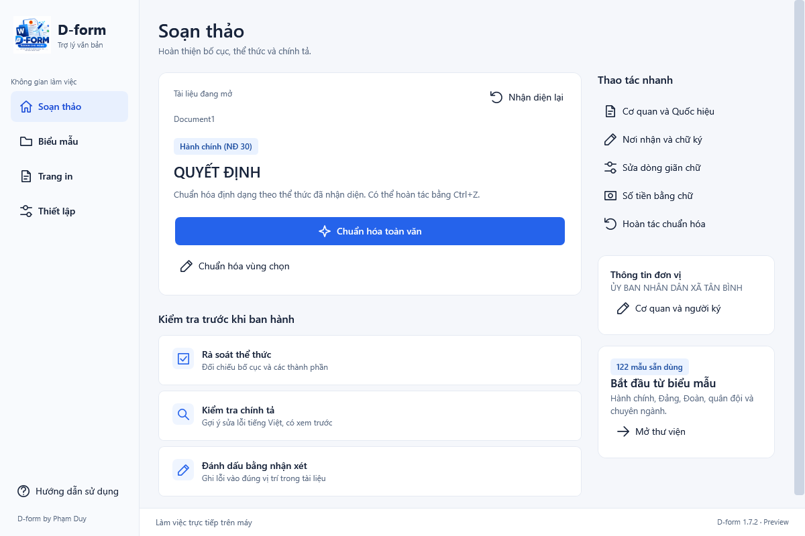

122 biểu mẫu sẵn dùng
Tìm theo nhóm văn bản. Xem trang thật, chọn trang và phóng to trước khi tạo tài liệu.
Bắt đầu từ mẫu. Xem trước thay đổi. Hoàn thiện tài liệu ngay trong không gian làm việc quen thuộc.
Windows · Word desktop 64-bit · Miễn phí sử dụng

Giao diện thật của D-form 1.7.2 preview
Hành chính · Đảng · Đoàn · Quân đội · Giáo dục
Những công cụ cần thiết, đặt ngay trong Word để bạn tập trung vào nội dung.
Tìm theo nhóm văn bản. Xem trang thật, chọn trang và phóng to trước khi tạo tài liệu.
Đối chiếu trước/sau, chọn từng nhóm định dạng rồi mới áp dụng cho tài liệu.
Bổ sung mức dấu theo nhu cầu soạn thảo, cùng các thành phần văn bản và phần ký.
Kiểm tra nội dung, đầu/chân trang, chú thích và hộp văn bản. Xem gợi ý trước khi thay.
Lưu bản trước khi chuẩn hóa hoặc xử lý toàn văn. Mở lại thành tài liệu mới khi cần.
Bộ cập nhật kiểm tra và tải từ GitHub, xác minh tệp và chờ Word đóng trước khi cài.
Khám phá giao diện thực tế trước khi cài.
Đang lấy thông tin phiên bản…
Cài riêng cho tài khoản Windows đang dùng. Phù hợp khi bạn tự cài trên máy của mình.
Cho nhiều tài khoản dùng cùng phần mềm. Dùng để nâng cấp bản đã cài toàn máy.
Lưu tài liệu và đóng Word trước khi cài. Máy đang dùng bản AllUsers cần chọn bộ cài toàn máy để nâng cấp cùng phạm vi.
Chọn bộ cài một tài khoản hoặc toàn máy theo bản đang dùng.
Bản toàn máy yêu cầu xác nhận quyền quản trị của Windows.
Mở Không gian làm việc, chọn biểu mẫu hoặc xem trước chuẩn hóa tài liệu.
Đợt phát hành này dành cho Microsoft Word desktop 64-bit trên Windows, cùng .NET Framework 4.8. Word 32-bit và Word trên trình duyệt chưa thuộc phạm vi này.
Sau khi cài gói có bộ cập nhật, thành phần chạy nền khởi động khi đăng nhập Windows và kiểm tra bản mới mỗi 12 giờ khi máy hoạt động. Tệp tải về được xác minh. Free tự cài khi Word đóng; AllUsers cần bấm thông báo và xác nhận quyền quản trị. Có thể bật/tắt ở biểu tượng D-form trong khay hệ thống.
Cài bộ mới trên trang này một lần để có thành phần cập nhật chạy nền. Những lần phát hành tiếp theo sẽ được bộ cập nhật nhận từ GitHub.
Các thao tác văn bản chạy trên máy. Bộ cập nhật chỉ lấy thông tin phiên bản và bộ cài; không gửi tài liệu, bản khôi phục, cấu hình cơ quan hoặc từ điển lên GitHub.
Chức năng hướng tới sửa định dạng. Bạn xem thay đổi trước khi áp dụng và có bản khôi phục. Vẫn cần kiểm tra nội dung, thể thức và thẩm quyền trước khi ban hành. Luồng xem trước/khôi phục mới dùng tài liệu không có macro hoặc mật khẩu.
Liên hệ Phạm Duy để được hướng dẫn và gửi góp ý cho D-form.